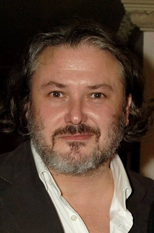
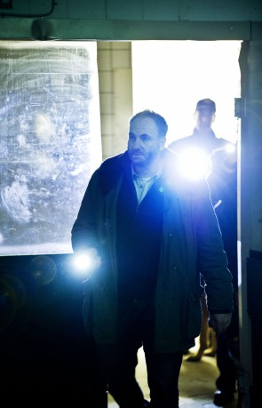
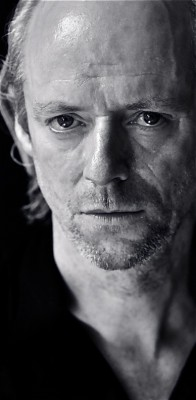
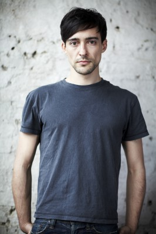
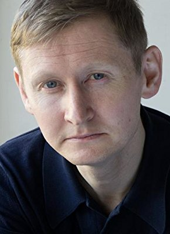

#8960 Serena

 IMDB-Wertung: 5.4 / 10
IMDB-Wertung: 5.4 / 10  Metascore: 0
Metascore: 0 
Das frisch verheiratete, junge Ehepaar George und Serena Pemberton reist im Jahr 1929 von Boston nach North Carolina um ins florierende Holzunternehmen einzusteigen. Die beiden erweisen sich als überaus erfolgreich, besonders Serena zeigt, dass sie ihrem Mann durchaus ebenbürtig ist, kontrolliert die Arbeiter und rettet sogar einem Mann in der Wildnis das Leben. Als sie jedoch erfährt, dass sie keine Kinder bekommen kann, wächst ihre Eifersucht auf Georges Sohn aus einer früheren Beziehung. Als Serena schließlich vermutet, dass George seine uneheliche Familie schützen will, schmiedet sie einen Plan, um ihren Mann für sich zu haben. Die Ehe der beiden wird auf eine harte Probe gestellt, als auch noch die Regierung versucht, Ansprüche auf das Land der Pembertons zu erheben.
Jahr: 2014
Dauer: 109 Minuten
FSK: 12
Land: Tschechische Republik Studio: StudioCanalTonspuren: DTS - ,
Untertitel: Deutsch,
Auflösung: 1080p (1920x804) Größe: 6164 MB
Genre: Drama, Liebe
Regisseur: Susanne Bier
Drehbuch: Christopher Kyle
Soundtrack: Johan Söderqvist
Darsteller:
 Bradley Cooper als George Pemberton
Bradley Cooper als George Pemberton Jennifer Lawrence als Serena Pemberton
Jennifer Lawrence als Serena Pemberton Rhys Ifans als Galloway
Rhys Ifans als Galloway Toby Jones als Sheriff McDowell
Toby Jones als Sheriff McDowell David Dencik als Buchanan
David Dencik als Buchanan Sean Harris als Campbell
Sean Harris als Campbell- Ana Ularu als Rachel Hermann
 Sam Reid als Vaughn
Sam Reid als Vaughn-  Conleth Hill als Doctor Chaney
- Charity Wakefield als Agatha
 Douglas Hodge als Horace Kephart
Douglas Hodge als Horace Kephart-  Kim Bodnia als Abe Hermann
 Christian McKay als Boston bank manager
Christian McKay als Boston bank manager- Philip Zandén als Calhoun
-  Ned Dennehy als Ledbetter
 Petr Vanek als Frizzell
Petr Vanek als Frizzell- Filip Kankovský als Chopper
-  Blake Ritson als Lowenstein
-  Raymond Waring als Ticket master
- Barbora Lukesová als Crying woman at bank
- Jan Monczka als Commissioner #1
- Pavel Reznícek als Commissioner #2
 Pavel Kríz als Upset man at bank
Pavel Kríz als Upset man at bank- Natasa Burger als Mother in waiting room
 Mark O'Neal als Lumberjack (uncredited)
Mark O'Neal als Lumberjack (uncredited)- Kvido Najser als Baby Jacob
- Tereza Hroudova als Baby Jacob
- Amelie Vernerova als Baby Jacob
- Matej Sonka als Toddler Jacob
- Vladimír Marek als Convulsing logger
- Petr Drozda als Big Bill McComb
- Hilton McRae als Doctor
- Todd Wagner als Waiter
- Helena Dvoráková als Nurse
- Michael Ryan als Coldfield
- Bodil Jørgensen als Mrs. Sloan
- Jirka Firt als Shay engine driver
- Aryan Barvah als Indian man #1
- Piyasiri Gunaranta als Indian man #2
- Ivo Zubaty als Crane operator
- John Comer als Beggar
- Alena Dlouhá als Hotel receptionist
- Petr Inenicka als Hotel waiter
- Tereza Machacova als Child in waiting room
- Harpal Singh Bamrah als Indian man #3
- Jirí Maria Sieber als Photographer #2
- Bruce Davidson als Working man at slideshow
 Jim High als Wood Cutter (uncredited)
Jim High als Wood Cutter (uncredited)
Datei: X:\2014(N-Z)\Serena (2014, FSK12, 1920x804).mkv seit 16.05.2018
Festplatte: HD 2013(I-Z)-2014(A-Z)
 Es gibt insgesamt 163 Filme in der Gruppe '2014(N-Z)'
Es gibt insgesamt 163 Filme in der Gruppe '2014(N-Z)'